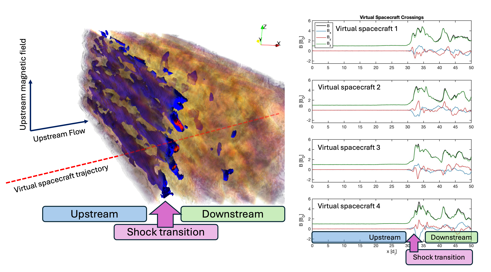

HYPSI#
HYPSI is an hybrid-kinetic PIC code, where ions are modelled as macroparticles and advanced using the standard PIC method while the electrons are modelled as a massless, charge-neutralizing fluid with an adiabatic equation of state.
HYPSI supports several initialisations and boundary conditions, the most used one of which allows the propagation of a shock wave in the simulation domain. This is done thorugh the injection method, employing an open inlow boundary and a reflective wall. The other two directions have periodic boundary conditions. Importantly, HYPSI is one of the first codes supporting a realistic turbulent initialisation for the shock upstream. Such turbulent initialisation is performed through a combination of MHD and hybrid kinetic simulations, where the output of an MHD model becomes the initial condition for the shock simulation (see [1]). An important aspect of this initialisation is that the perturbation is finite in both space and time extent. Recent improvements allow for continuous injection of upstream turbulence.
WG Points of Contact |
Domenico Trotta, Laura Vuorinen |
Current code version |
|
code/repository |
Not publicly available |
Software code languages and tools |
HYPSI is in C++ MATLAB and Python toolkits are availability for output analysis |
Use cases#
The HYPSI shock initialisation was used to address several aspects of shock physics, such as particle diffusion at quasi-parallel shocks, alpha particle behaviour and their influence on the shock tranistion, generation of downstream jets and plasmoids and the interaction between upstream Ultra-Low-Frequency (ULF) waves and the shock transition. HYPSI was also successfully used in combination with test-particle methods to study energetic electron dynamics, in particular to study the effect of shock rippling on electron acceleration in both two- and three-dimensional geometry. Other available HYPSI setups include periodic boundary conditions and the possibility to study freely-decaying turbulence and systems of current sheets relevant to outer heliospheric environments.
{kind=link}
Data availability#
Two-dimensional datasets covering a large shock parameter range (0 to 90 degrees shock normal angles, 0.1 to 10 plasma beta, Alfvanic Mach numbers 2 to 30) are easily provided upon request, useful to look at electromagnetic fields, plasma moments, particle distributions. Coupling to test-particle codes to study energetic particle dynamics is also possible (see [2]) Turbulent and three-dimensional runs can also be provided, though they require more planning due to computational constraint. An extensive set of software to analyse HYPSI output is also available upon request in both MATLAB and Python, with the Python version ‘hypy’ being released soon.
Simulations-on-demand#
Simulations can be performed on-demand. Please get in touch with the WG or directly to Domenico Trotta (domenico.trotta@esa.int) and Laura Vuorinen ().
Numerical Methods#
Hybrid PIC code using CAM-CL algorithm [3].